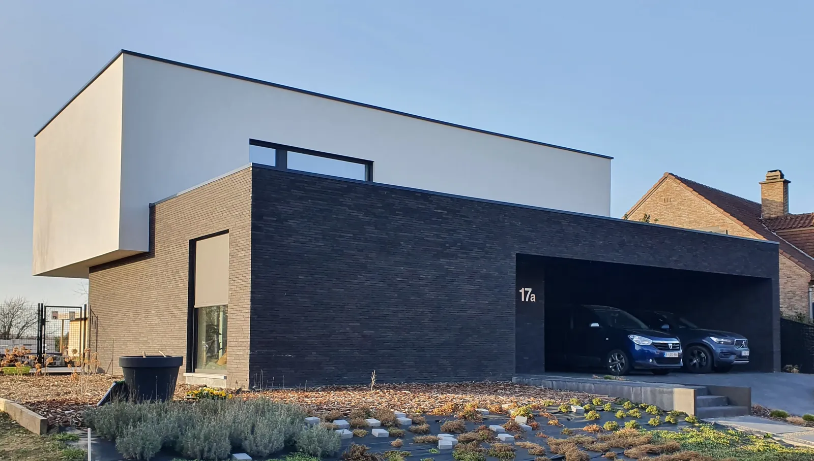
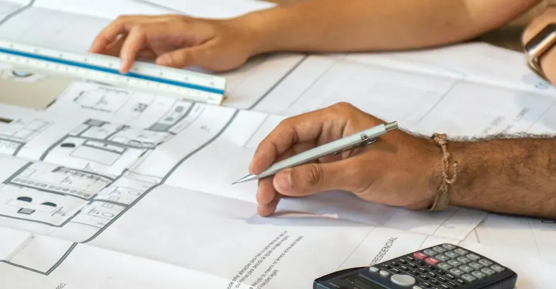
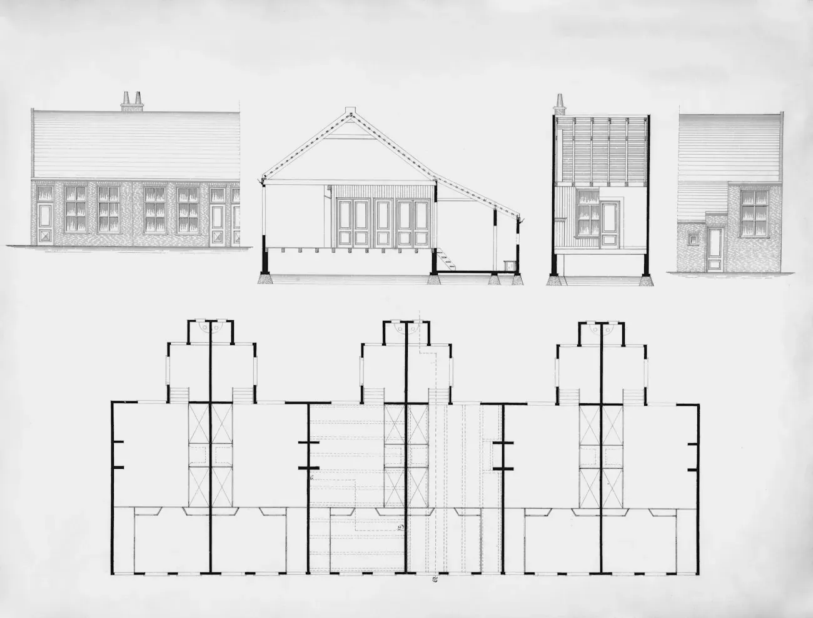
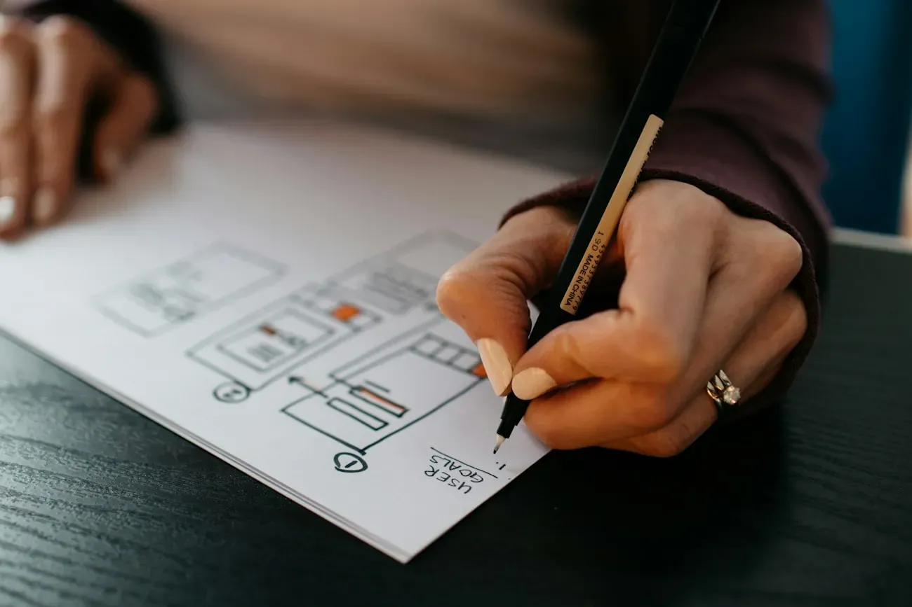
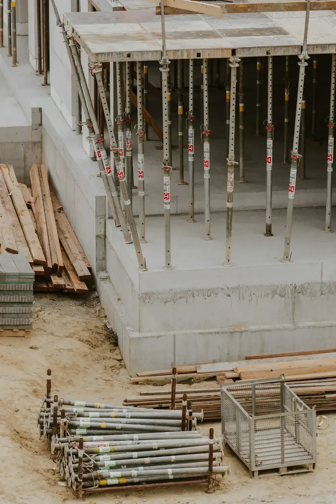
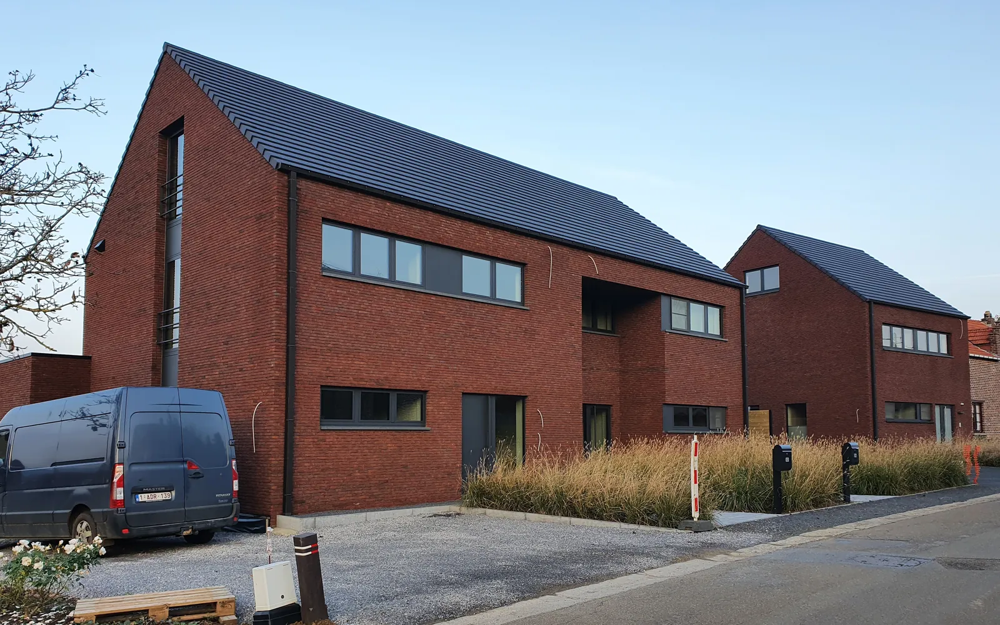
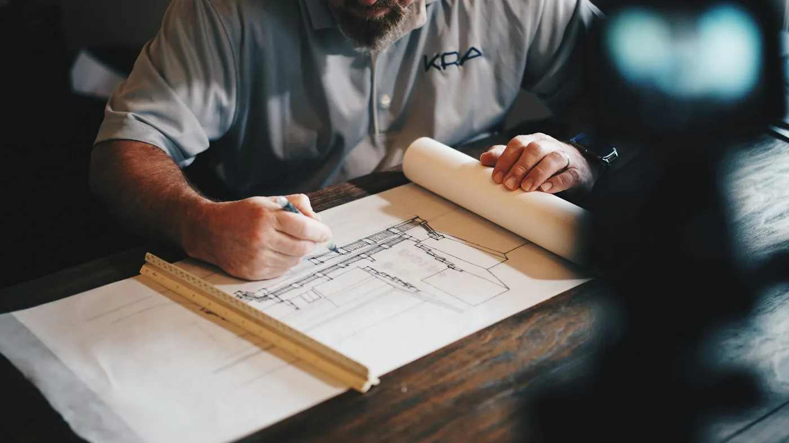

Woningen die kloppen, op papier én op de werf.
Katleen Seldeslachts tekent uw woning, vraagt de offertes op en volgt de werf tot de oplevering. Eén aanspreekpunt, van de eerste koffie tot de sleutel.


Een huis moet passen bij het leven erin.
Daarom begin ik altijd met luisteren: hoe ziet uw dag eruit, wat mist u nu, wat mag het kosten.
Als ingenieur-architect kijk ik ook technisch naar uw ontwerp. Wat op papier staat, moet op de werf haalbaar en betaalbaar zijn.
Waar staat u vandaag?
Kies wat bij u past. U ziet meteen wat de volgende stappen zijn.

Drie fasen. U weet altijd wie wat doet.
Bouwen voelt voor veel mensen als een berg. Zo wordt het een pad.

Kennismaking
Plannen

Constructie
Strak of klassiek, altijd doordacht.
De stijl kiest u. Katleen zorgt dat het klopt.


Minder verrassingen op de werf.
Een architect uit uw eigen buurt.
Wie hier bouwt, kent de dorpen, de straten en de regels van de gemeente. Dat scheelt.
Wat mensen vaak vragen.
Wat is het verschil met een gewone architect?
Een ingenieur-architect heeft ook een technische opleiding. Ik denk van bij de eerste schets na over hoe het gebouwd wordt, zodat er op de werf minder verrassingen opduiken.
Moet ik zelf aannemers zoeken?
Dat hoeft niet. Ik vraag offertes op en help u ze te vergelijken. U kiest, ik zorg dat het vergelijkbaar is.
Hoe lang duurt het voor ik kan bouwen?
Dat hangt af van het ontwerp en de vergunning. In het eerste gesprek maak ik een realistische planning.
Kan ik ook voor een verbouwing terecht?
Vertel gerust wat u van plan bent. Dan bekijken we samen wat er nodig is.
Wat neem ik mee naar de kennismaking?
Het plan of adres van uw grond, foto's, beelden van huizen die u mooi vindt en een idee van uw budget.